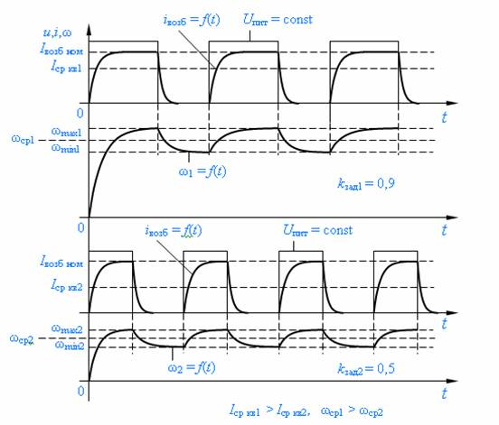

| 8 | Электрооборудование ниткошвейного автомата |
| 8.2 | Электропривод главного вала автомата |
Как указывалось ранее включение двигателя М1 осуществляется путем нажатия кнопки
SB2. При подаче напряжения на двигатель М1 напряжение поступает и на катушку электромагнита
YB1 электромеханического тормоза (рис. 1). Главный вал ниткошвейного автомата растормаживается, и он готов к вращение электромагнитной муфтой скольжения. Основное назначение электромеханического тормоза состоит в наибыстрейшей остановке главного вала. Это происходит практически мгновенно, поскольку в случае неполадок главный вал с помощью электромагнитной муфты скольжения отсоединяется от еще вращающегося электродвигателя, шкивов, муфт, расположенных на валу двигателя, т. е. от больших инерционных масс. Таким образом, тормоз останавливает непосредственно саму машину. В случае отсутствия тормоза при неисправностях, ведущих к отключению двигателя, узлы автомата продолжали в силу его общей инерционности двигаться некоторое время, что привело бы к поломкам механизмов и нарушениям технологического процесса (сшивание тетрадей в блок).
Рассмотрим работу электропривода главного вала ниткошвейного автомата. Вал приводится в движение от асинхронного двигателя, скорость которого не регулируется. Технологические процессы, выполняемые на ниткошвейном автомате, требуют и регулирование скорости, и ее стабилизацию.
Скорость работы автомата определяет его производительность, а стабилизация скорости обуславливается ударным характером момента статического сопротивления швейных механизмов. При возникших неполадках, вызванных, например замятием поступившей на позицию шитья тетради, что может привести к механической поломки игл, необходима экстренная остановка автомата. Известно, что механическое оборудование ниткошвейного автомата обладает большим моментом инерции в несколько раз превышающим момент инерции приводного двигателя, и поэтому остановка механизма длится несколько секунд. Для уменьшения времени торможения целесообразно в этом процессе отделить приводной двигатель, вращающийся с большой скоростью, от главного вала, вращающегося в несколько раз меньшей, чем двигатель, скоростью и проводить торможение самого механизма. Учитывая этих три аспекта: регулирование скорости, ее стабилизация и снижение времени торможения механизма, в ниткошвейном автомате приводной двигатель соединяется с главным валом электромагнитной муфтой скольжения ЭМС.
Рис. 8. 4. Схема электрическая принципиальная электропривода главного вала
Входной вал ЭМС соединяется с валом приводного двигателя, а выходной – с главным валом ниткошвейного автомата. Скорость выходного вала ЭМС регулируется изменением тока возбуждения ЭМС (его индуктора). Автоматическое поддержание скорости обеспечивается системой регулирования с жесткой отрицательной обратной связью по скорости, выполненной тахогенератором BR, измеряющим скорость главного вала. Регулирование тока возбуждения индуктора ЭМС осуществляется широтно-импульсным методом. Для этого имеется схема регулирования, собранная на транзисторах VT1, VT2, VT3, представляющая триггер Шмитта, реализующий усилитель релейного действия (триггер Шмита – схема, имеющая одно устойчивое состояние, при котором на выходе схемы имеется логический ноль. При поступлении на вход схемы управляющего импульса схема переходит в другое устойчивое состояние, при котором на выходе имеется логическая единица. После снятия входного импульса схема самопроизвольно возвращается в первоначальное состояние.). Эта схема представляет собой двухкаскадный усилитель (VT1, VT2, VT3) постоянного тока с эмиттерной связью, во втором каскаде используется составной транзистор VT1, VT2. Стабилизированное опорное напряжение Uоп формируется выпрямителем UZ2, конденсатором C3, резистором R12, стабилитроном VD7 и подается на регулируемое сопротивление R8, на движок которого поступает напряжение обратной связи Uоб.св. Напряжение обратной связи Uоб.св формируется из напряжения тахогенератора BR резисторами R10 и R11 и выпрямителем UZ1, который делает напряжение Uоб.св инвариантным полярности напряжения тахогенератора, а значит и направлению вращения электропривода. Положением движка резистора R8 можно изменять значение той части опорного напряжения, которая сравнивается с напряжением обратной связи по скорости, в результате чего формируется управляющее напряжение ΔU = kзад · Uоп – Uоб.св, воздействующее на релейный усилитель. В исходном состоянии усилитель открыт по входному транзистору VT3 (на его базе создан резисторами R3, R6, R7 и диодом VD5 потенциал примерно 0,1 В, это порог срабатывания триггера Шмитта) и закрыт по выходному VT1. При отсутствии напряжения обратной связи Uоб.св управляющее напряжение ΔU больше порога срабатывания и транзистор VT3 закрыт, а транзисторы VT1, VT2 открыты и по обмотке возбуждения LL ЭМС течет ток Iвозб ном. В индукторе ЭМС создается магнитное поле, которое за счет вращающегося от приводного двигателя М1 якоря, приводит в движение индуктор, передавая вращающий момент от двигателя главному валу автомата. При достижении главным валом заданного значения скорости, определяемого напряжением kзад·Uоп, снимаемым с резистора R9, напряжение обратной связи Uоб.св уменьшит управляющее напряжение ΔU ниже порога срабатывания триггера и транзистор VT3 открывается, а транзисторы VT1, VT2 закрываются, ток в обмотке возбуждения прекращается и скорость выходного вала ЭМС начнет уменьшаться. Уменьшающееся напряжение обратной связи Uоб.св увеличит управляющее напряжение ΔU выше порога срабатывания триггера и снова включатся транзисторы VT1, VT2, по обмотке возбуждения индуктора ЭМС потечет ток, начнется переда механического момента, начнется увеличение скорости, а значит увеличение напряжения обратной связи. Так будет продолжаться циклическое включение-отключение ЭМС, поддерживающее заданное значение скорости. Также работает схема регулирования тока возбуждения ЭМС при различного рода набросах нагрузки при выполнении процесса шитья, когда уменьшается скорость главного вала (скорость тахогенератора). Эпюры напряжения питания и тока обмотки возбуждения и зависимости угловой скорости выходного вала ЭМС при различном значении коэффициента kзад, т. е. при задании различной угловой скорости главного вала, приведены на рис. 8. 4. Анализируя характер изменения скорости главного вала можно констатировать, что при различных значениях коэффициента kзад время увеличения скорости от минимального значения ωmin (ωнач) до максимального ωmax (ωкон) будет разным, как и уменьшение скорости от максимального значения ωmax (ωнач) до минимального ωmin (ωкон). Это объясняется тем, что при различных значениях коэффициента kзад момент развиваемый ЭМС будет разный, определяемый среднеквадратичным током возбуждения Iср кв в результате широтно-импульсного модулирования напряжения подаваемого на обмотку возбуждения. Следовательно, в соответствии с уравнением движения указанное время tразг может быть вычислено по выражению
где JΣ
пр – суммарный приведенный момент инерции электропривода; Мдв
– момент развиваемый двигателем; Мдв – момент
статической нагрузки.
Время
уменьшения скорости главного вала (притормаживание) вычисляется по выражению
Питание обмотки возбуждения ЭМС в целях безопасности осуществляется пониженным напряжением от обмотки I трансформатора TV1 и двухполупериодного выпрямителя с нулевой точкой на диодах VD1 и VD2, поскольку один потенциал питающего обмотку возбуждения напряжения подается на массу ЭМС.

Рис. 8.
5. Эпюры
напряжения питания и тока обмотки возбуждения
и зависимости угловой скорости
выходного вала ЭМС
при различном коэффициенте kзад
При коммутации обмотки возбуждения транзисторами VT1, VT2 возникают перенапряжения, которые могут вызвать пробой изоляции обмотки или пробой переходов транзисторов VT1, VT2. Для снятия этих перенапряжений параллельно обмотке включен диод VD3. Выбор рабочей точки составного транзистора VT1, VT2 достигается напряжением конденсатора C1, питающимся однополупериодным напряжением, создаваемым обмоткой II трансформатора TV1 и диодом VD4, резисторами R4 и R5. Работа регулятора напряжения обмотки возбуждения от коротких замыканий и аварийных режимов, создающих токи, превышающие номинальное значение его тока, защищена предохранителем FU1.